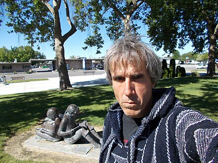
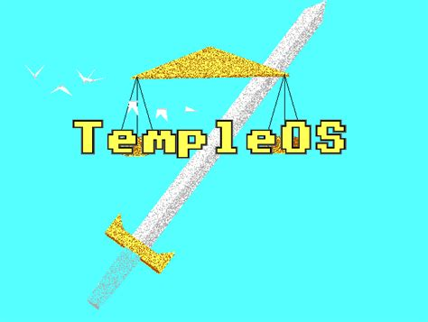

Infidels ->"Mac/Win/Lin"whatever garbage enjoyers arent allowed, as always we are 2 days late


hey you seem
--to x have--
I wanted it to be a place where God would be happy to look.
Man live through the existence in the abyss Yet man complain about life Is it that their life is unbearable Or that the man cant be bothered Eitherway thy shall come to an endAs you are, so once were we. As we are, so you will be.
Memento Mori
Thus spoke The King Terry The Terrible
1. On Simplicity and Complexity
"An idiot admires complexity, a genius admires simplicity, a physicist tries to make it simple, for an idiot anything the more complicated it is the more he will admire it, if you make something so clusterfucked he can't understand it he's gonna think you're a god cause you made it so complicated nobody can understand it. That's how they write journals in Academics, they try to make it so complicated people think you're a genius."
— Terry A. Davis
Source: Goodreads(1)
2. On Reality and Perception
"What’s reality? I don’t know. When my bird was looking at my computer monitor I thought, ‘That bird has no idea what he’s looking at.’ And yet what does the bird do? Does he panic? No, he can’t really panic, he just does the best he can. Is he able to live in a world where he’s so ignorant? Well, he doesn’t really have a choice. The bird is okay even though he doesn’t understand the world. You’re that bird looking at the monitor, and you’re thinking to yourself, ‘I can figure this out.’ Maybe you have some bird ideas. Maybe that’s the best you can do."
— Terry A. Davis
Source: Goodreads(2)
3. On Divine Mission
"I am God’s chosen programmer. He has endowed me with divine intellect, like the authors of the Bible. It has no code I did not write. It never runs code I did not write. I am the best programmer on the planet. I wrote a 64-bit compiler, assembler, kernel, debugger, bootloader, graphics library, graphics-editor, editor, tools like grep and a bunch of demos, including a first-person-shooter and flight simulator."
— Terry A. Davis
Source: Reddit(3)
| C A E L E S T |
||
|---|---|---|
| And unto him that smiteth thee on the one cheek | offer also the other; | |
| and him that taketh away thy cloke | forbid not to take thy coat also. | Give to every man |
| that asketh of thee;1 | and of him that taketh away thy goods | ask them not again. |